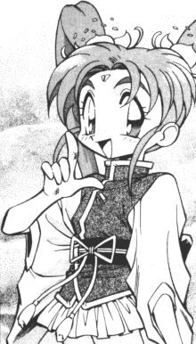

Crossover FanFics: K-R |
This page holds crossover fan fiction that includes Tenchi Muyo. Crossovers are very intresting. They really change the character interactions since the mixing of diffrent worlds, series, situations, can change the dynamic of the story. Please go here if you would like your works published on this site. |
K
Kagemusha (kagemusha@hotmail.com)
Kali (Kalisa284@aol.com)
Karlmarks (markskarl@hotmail.com)
Kartoonist (Kartoonist13@aol.com)
The Tenchi Tournament! - Prologue : "Tenchi's
Decision"
In order to clear up the confusion about Tenchi and who he likes,
he holds a tournament open to everyone in the anime world and video game
world. 8KB -9/27/2001
Keener (kagato@bellsouth.net)
Francis Keenan (goku45uk@yahoo.co.uk)
Brandon "Ryoko's Knight" Kelley (ed_blackadder@hotmail.com)
Kenma (Gankboy@icok.net)
Keiichi Masaki (keiichi-dono@anifics.com)
Douglas B. Killings (detroyes@enteract.com)
This Time Round
A Tenchi and Doctor Who crossover. 6KB -7/13/1999
Sarah Kinos (tbug88@yahoo.com)
Muyo Wars!
A Tenchi Muyo and sailor Moon X-over. 62KB -7/20/2000
Kireihana (weepinbell70@yahoo.com)
Kokoiiny (Odangobunny@crystal_tokyo.com)
William Kotas (Wkotas@utk.edu)
Ksawarrior (Ksawarrior@aol.com)
Tales of Scimitar
A X-over with a DBZ villian and other characters. (Multipart)
-11/28/1999
4 parts of the Same Soul -
Prologue
A X-over between Tenchi, Ranma, Recca, and Ushio and Tora.7KB
-5/30/1999
Owen "Little Masa-ouki" Kuhn (lighthawkwings@masakishrine.com)
Owen "Little Masa-ouki" Kuhn (lighthawkwings@masakishrine.com) and Paul "IrrCapT" Bernard (pmbernard@usa.net)
Lady_Allure (lady_allure@arcticnightfall.zzn.com)
Lady Ambermoone (ladyambermoone@att.net)
Lady Athena (giadaelisa@cox.net)
Ash Lambert (Vandalier1@aol.com)
Mike Langley (Mike618572@aol.com)
LastFencer3200 (LastFencer3200@yahoo.com)
Lauren "RyoukoMasaki2001" (XJessiexTRX@aol.com)
Tim "GenerationX7" Lee (SPTL1234@neo.rr.com)
Lei (elisas@geocities.com)
Lei Kiyone (animeguy56@yahoo.com)
Adam Christopher Leigh (Omicron@sprynet.com)
Kevin "Vegeta" Lewis (klewis8@austin.rr.com)
Katherine "Suicune" Lindroth (renogatomon@AOL.com)
LiquidX (suzuki17@hotmail.com)
Literary Eagle (literaryeagle@hotmail.com)
Little Natalie (snowpenguin14@aol.com)
Little Washu (WashuvsCuteness@aol.com)
Greg Lively (Vault_Keeper_2000@yahoo.com)
Jonathan Lloyd (Starstrike@geocities.com)
Jesse Lockhart (jesslock@bellsouth.net)
COPS: Galaxy Police Special
A Fusion of Tenchi Muyo and COPS. 10KB -7/10/1999
Loneknight (loneknight1012@yahoo.com) & Sarah
A Quest for Love
This story is about two people among many on macross that get sucked
into a new demension and a whole new world of trouble. (Multipart)
-2/25/2002
Pierre-Luc Louis-Jacques (smskillwriter@aol.com)
Lord Archive (Archive@mich.com)
Luna (LunaHNeko@aol.com)
Ah! Megami-sama Muyo!
Oh! My Goddess and Tenchi Muyo X-over. (Multipart) -1/16/2000
Bruce MacNeel (macneel@gte.net)
Dan Magee (DannyM888@aol.com)
MagicSerebii (huffgp@email.msn.com)
MagiLost (MagiLost@aol.com)
Mangaanimegirl (becky.bishop@ntlworld.com)
Magus the Dark (Magus_the_Dark@hotmail.com)
Majin Z (MajinZ@aol.com)
Malice (Malice_molotov@hotmail.com)
Garret Mangio (juraianstump@netscape.net)
Michael Mann (FatalViper@juno.com)
Saved from Buu & Babidi - Part 1
This is about Babidi and his partner Buu.They find a new energy sorce
at the Masaki Residents and Buu wants to "EAT IT UP!" 14KB -3/27/2002
Farzad Mansouri (mansouri@wam.umd.edu)
No Need to be Wild
A response to a dare by Peter Suzuki. Tenchi and Ranma X-over. (Multipart)
-9/15/1999
Jim "Xahji" Martin (metalhed@icanect.net)
Othniel "OThni" Martinez (othni_g_x_dbzgt@hotmail.com)
Ron "Deadvision" Martin (Deadvision@hotmail.com)
Kaflar Masion (vegita_ss4@hotmail.com)
Ryan Mathews (mathews1@ix.netcom.com)
Patrick Maurer (p_maurer84@hotmail.com)
Sakura Maxwell (Sakuramaxwell@msn.com)
Michael "Shorin" McAvoy (mmcavoy@ejourney.com)
Andrew "Claudius" McCormick (anmcco43@hotmail.com)
Heather "Sakuya Misaki" McNully (tenchigirl@yahoo.com)
Tomas "Tom Sticka " Megerson (NighthawkTM@yahoo.com)
Mercury Knight (mercury_knight2001@yahoo.com)
Firena Merrie (Kprofsea@aol.com)
Metal Sonic v2 (now_in_stereo@hotmail.com)
Loreal "Mihoshi" Miller (mihoshi_spacegirl@yahoo.com)
Miss Washu (ballamum@hotmail.com)
Robert "Chazo" Montoya (hotluvchef@aol.com)
Moore (Goku89@juno.com)
Jeff Morris (jeffreysmorris@aol.com)
Naiyami Kasaki (chibiachika@masakishrine.com)
Brian Navy (Geosword@fastlane.net)
Brent Neef (Bneef@ice.net)
Thao "Magaru Sakari" Nguyen (Ku_Pong_Thi@Magicgirl.com)
Nick (Tenchi316@aol.com)
Kahlil Noriega (becknkal@addax.bc.ca)
Ryan Norman (Deevra@yahoo.com)
Okoyr (bcingu797@yahoo.com)
The Old Took (old_took@hotmail.com)
Karl Olson (thestereologic@juno.com)
Pat Olsen (Tagan1@pacbell.net)
Ongaku (sailor_music@sailormoon.com)
Otakon X. Shinigami (Kiyones_Lover@galaxypolice.com)
The Outlaw (coolnessa@aol.com)
Clayton Overstreet (clayton_n@hotmail.com)
Nathan "Natrondog" Palmer (natrondog@bootheel.net)
Claire "Kaeldra" Pavilion (skraelingsmist@aol.com)
Bob "Black Mesa Man" Peck (themanfromblackmesa@hotmail.com)
Perfect Cell (denise@dnet.net)
Bradly C. "Garlic, Jr." Perry (garlic51@hotmail.com)
Vincent Perry (ivperry@starpower.net)
PHOOsun (stroma@globalnet.co.uk)
Russell Piper (Russael@tmia.net)
Platinum Dragon (Platinum_Dragon@usinternet.com)
Blood Red Moon
Tenchi plus CastleVania X-over. (Multipart) -9/15/1999
Asa "Masaki" Powers (ragnor27@hotmail.com)
Protoknuckles (Protoknuckles@yahoo.com)
Psychofiend (agr_car@hotmail.com)
Pyrous (PyroDrac@aol.com)
Mark J. Raming Jr. (Uchann@Aol.com)
Daniel “DAN_THE_MAN” Ramirez (dan__2003_98@yahoo.com)
Anand Rao (deranged_otaku@hotmail.com)
Dale Ratner (Shadow6865@aol.com)
Untitled - Chapter 1
Tenchi/ST:TNG Crossover. 7KB -3/9/1999
Red-chan (REDsoul@wow.com)
Ranma Muyo!
A Ranma/Tenchi X-over wher both casts interact. (Multipart)
Christine "Aquamarine Icesis Judaic" Rejba (IOIAndroid17IOI@aol.com)
Sean "Lukav" Reynolds (sirlukav@hotmail.com)
Gabe Ricard (garbageking3000@yahoo.com)
Adam "Asskicker" Richmond (Adam_Asskicker@yahoo.co.uk)
Riverblare (Jessiecat7@jimdhart.com)
The Goddesses - Part 1 : "Prologue"
Introduction to a Sailor Moon/Tenchi crossover! 8KB -7/31/2001
Francisco Rodriguez (frankiejrodriguez@msn.com)
D.F. Roeder (dfroeder@flash.net)
Hearts' Healing
A WAFF Ranma/Tenchi crossover where Ranma has a different mindset
after falling into the Nyanniichuan. 114KB -8/17/1999
Hearts' Healing Interlude -
"Wedding"
A WAFF Ranma/Tenchi crossover interlude. 19KB -8/20/1999
Hearts' Healing 2 : "The Paths of Honor"
- Part 1 : "Storm Fronts"
After 5 years of marriage, Ranma and Ryouko are setting up their own
household, and trouble is about to come calling. 73KB -11/20/1999
Craig "Resop" Roll (tstcraig@erols.com)
John Rose (psyo_mant1s@yahoo)
Perry "Trey2k" Rose (rosesfl@juno.com)
Jacob Van Rossum (epyon_10@hotmail.com)
Rotnok (tddeyoung31785@cs.com)
Rpb3000 (rpb3000@mad.scientist.com)
RPM (rpm39788@bayou.uh.edu)
Ryoko27 (Ryoko27@belldandy.com)
Ryoko-Himesama (Ryokohimesama@aol.com)
Ryoko Masaki (ggg@prairie.ca) and Sarah H. Malerna
Ryomi (ryomi_chan@yahoo.com)
Ryoko in Nerima
This story take place after Shin Tenchi Muyo, where Ryoko ran away
and meet Ranma's family. (Multipart) -9/23/2000
Unthinkable Past
Ryoko is Ai, Ai is Ryoko... but Ai stand Ryoko's past? It's a story
about love and confusion. (Multipart) -9/29/2000
Ryu Deomushi (pgslim2006@aol.com)